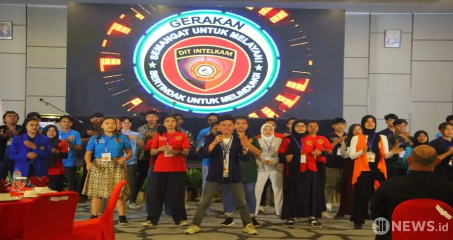

- 1
- 2
- 3
Salam Pancasila!
Kita berkumpul di sini, dirumah kebangsaan untuk bersama merefleksikan dan memperkuat komitmen kita, para Duta Sulut Aman untuk menjunjung tinggi Pancasila dalam segala aspek kehidupan.
Melalui rumah kebangsaan ini, kita kobarkan semangat untuk
- Menjadikan Sulawesi Utara aman dari ancaman hoax, ekstrimisme, dan politik identitas.
- Menggapai kehidupan yang lebih berkualitas dan semakin berkiprah dalam membangun Negeri.
- Menyuarakan, memperlihatkan dan menginspirasikan hikmat.
- Meningkatkan ilmu, dan mengamalkan ilmu
- Mengabdikan diri sebagai inspirator Indonesia unggul.
Terima kasih. Demikian kata sambutan saya
Salam Pancasila. Semoga Tuhan memberkati!

Tentang Kami
Era digital saat ini, sangat rawan terhadap perkembangan hoaks, ekstrimisme dan politik identitas sehingga netizen dituntut untuk semakin memiliki keluasan literasi digital dibarengi dengan pemikiran kritis yang berwawasan kebangsaan. Dalam kaitannya, Rumah Kebangsaan Duta Sulut Aman hadir untuk memberi khasanah literasi digital dengan mewadahi anak bangsa dari berbagai latar belakang suku, agama, ras, dan antar golongan saling berkomunikasi, dan bersama membangun koordinasi, kolaborasi dan networking untuk tangkal hoax, ekstrimisme dan politik identitas.
Harapannya, melalui wadah ini para mahasiswa/siswa bersama Dit Intelkam Polda Sulut dapat saling berbagi dalam suasana yang akrab berbagi cerita, pengalaman dan ide-ide kritis untuk menggelorakan semangat membangun Negeri dengan mengimplementasikan Tridharma Perguruan Tinggi. Melalui wadah ini semoga lebih memampukan para anggota untuk lebih berdampak menjadikan Sulut aman, rukun dan damai menuju Indonesia unggul.
Visi & Misi Kami
Visi
Mewujudkan Sulut aman, rukun dan damai menuju Indonesia unggul
Misi
Menggelorakan semangat:
- Tangkal hoax, ekstrimisme, dan politik identitas;
- Pendidikan, penelitian dan pengabdian masyarakat;
- Mengabdi mensukseskan program-program pemerintah dalam membangun Negeri;
- Berbangsa dan bernegara dengan dasar Pancasila dan UUD 1945.
Ikrar Kami
BERSATU MENANGKAL HOAX, EKSTRIMISME & POLITIK IDENTITAS
BERSATU & BERJUANG MENJADIKAN INDONESIA UNGGUL
BERSATU MENGHARGAI KEBERAGAMAN & TOLERANSI BERAGAMA.
Pelindung, Penasehat, dan Pembina RK DSA

Irjen Pol Drs. SETYO BUDIYANTO, S.H., M.H.
Kapolda selaku Pelindung
KBP Dr (Can) Albert B Sihombing M.Si., M.A.
Dir Intelkam selaku Koor Pembina

dr. Kartika Devi Tanos, MARS
Kadis PPA Sulut selaku Pembina

Fery Sangian
Kabankesbangpol Sulut selaku Pembina
Pengurus Rumah Kebangsaan Duta Sulut Aman
Jerry Paulus
Kabid Pengabdian Masyarakat
M. Irham
Kabid Organisasi & Komunikasi

Friska D. Manalu
Kabid Rekrutmen & Kaderisasi
Artikel
Melawan Ekstremisme: Membangun Pemahaman dan Keharmonisan dalam Masyarakat
Melawan ekstrimisme adalah tugas bersama yang membutuhkan komitmen dari semua pihak. Dengan adanya pemahaman yang lebih baik tentang akar masalah, pendidikan yang inklusif, kolaborasi dan koordinasi antar lembaga pemerintah, organisasi masyarakat sipil, lembaga pendidikan, dan komunitas agama, serta menghormati perbedaan, adalah hal yang dapat dilakukan untuk membangun masyarakat yang lebih harmonis dalam menghadapi tantangan ekstrimisme dengan lebih efektif.

Admin
13 06 2023
Mengenali dan Menghindari Penyebaran Informasi Palsu
Hoax merupakan ancaman serius di era informasi digital saat ini. Namun, dengan kesadaran dan langkah-langkah pencegahan yang tepat, kita dapat menangkal hoax dan melindungi diri kita dari penyebaran informasi palsu. Mengenali sumber informasi, memverifikasi fakta, menghindari judul sensasional, waspada terhadap foto dan video yang dipalsukan, serta menggunakan akal sehat.
Admin
13 06 2023

SEJARAH TERBENTUKNYA RUMAH KEBANGSAAN DUTA SULUT AMAN
Kegiatan Polda goes to campus berupa seminar sehari bertajuk “Bijak Medsos, hoax nyingkir. Mahasiswa kritis, ekstrimisme minggir” di 15 Perguruan Tinggi yang ada di Sulawesi Utara sejak 20 September 2022 selain menjadi jembatan komunikasi antara Dit Intelkam Polda Sulut dengan civitas akademi baik Pimpinan Perti dan mahasiswa, juga menumbuhkan inspirasi perlunya kegiatan yang berkelanjutan agar lebih berdampak.
Super Admin
13 06 2023
Berita

Baca selengkapnya
Kapolda Sulut Canangkan Duta Sulut Aman-Tangkal Hoax, Ekstrimisme Dan Politik Identitas
Kapolda Sulawesi Utara mencanangkan program Duta Sulut Aman-Tangkal Hoax, Ekstrimisme dan Politik Identitas. Program ini diikuti oleh 154 mahasiswa/i dari berbagai perguruan tinggi di Sulut. Irjen Pol Setyo Budiyanto berharap para peserta dapat melakukan tindakan nyata untuk melawan hoax, ekstrimisme, dan politik identitas.
John Doe
13 06 2023
Kolaborasi